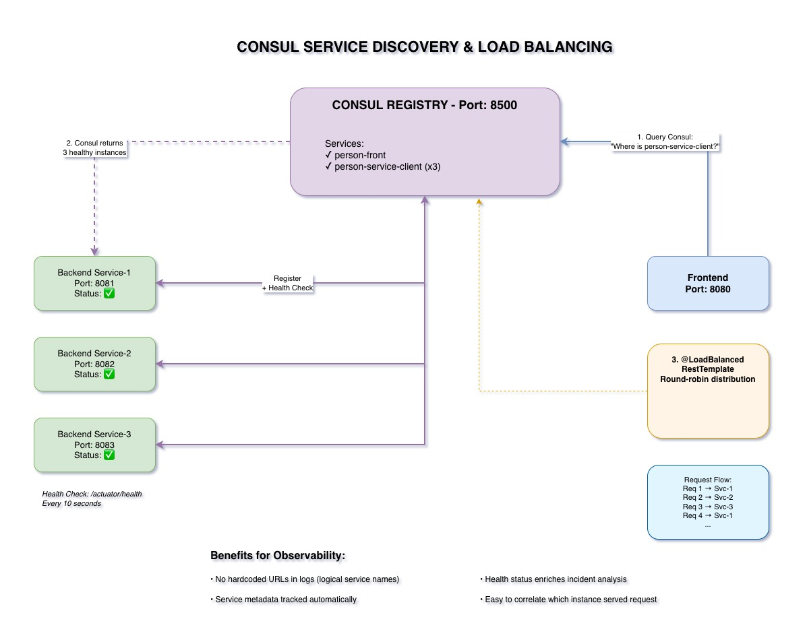

Consul: The Glue That Holds It Together
Service registry, discovery, health checking, and load balancing in one tool.

What is Consul?
- Service registry: Services register themselves automatically
- Service discovery: Find services by name, not hardcoded URLs
- Health checking: Automatic failure detection
- Load balancing: Multiple instances, client-side balancing
Our Setup
- Frontend: 1 instance on port 8080
- Backend: 3 instances on ports 8081, 8082, 8083
- @LoadBalanced RestTemplate: Automatic round-robin distribution
- Health checks: Every 10 seconds via /actuator/health
Why It Matters for Observability
- No hardcoded URLs: Logs show logical service names
- Automatic health checks: Integrated monitoring
- Service metadata: Enriches logs and metrics
- Easy correlation: Track which instance served each request
Key Takeaways
- Consul provides service registry and discovery
- Automatic health checking integrated
- Client-side load balancing across instances
- Enhances observability with service metadata